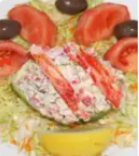
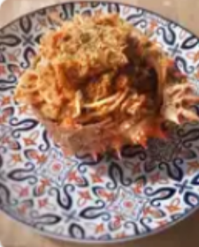

Falsa mousse centollo en cucharitas
huevos cocidos • palitos de cangrejo • mejillones • berberechos • mayonesa • nata para cocinar • sal • cucharitas comestibles
huevos cocidos • palitos de cangrejo • mejillones • berberechos • mayonesa • nata para cocinar • sal • cucharitas comestibles

Centollas cocidas • cebollas medianas • leche entera • maicena • sal • pimienta negra • nuez moscada • aceite de oliva

carne de centolla cocida • cebolla morada • pimiento morrón • apio • cilantro • mayonesa • mostaza
carne de centolla cocida • camarones • mantequilla • cebolla • ingredientes para relleno

centolla viva • conchas finas • gambas frescas • limón • ajo • perejil fresco

Centolla hervida • spaghetti • cebolla • ajo • tomate • brandy • estragón

pescado blanco • camarones • pulpo • limón • cebolla morada • cilantro • ají